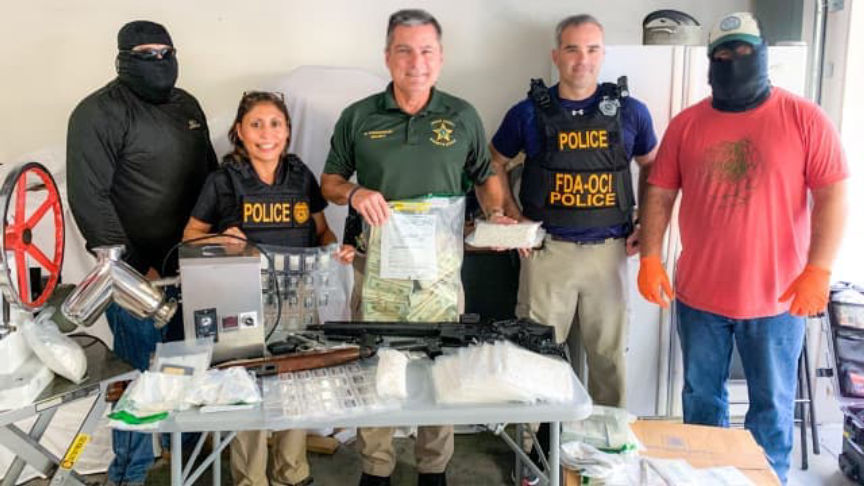
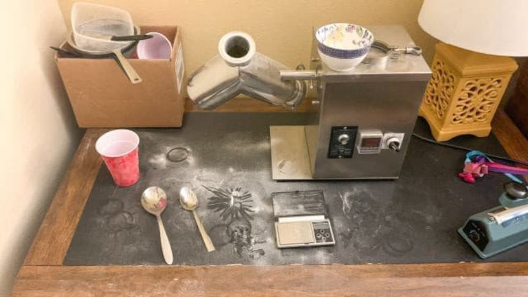
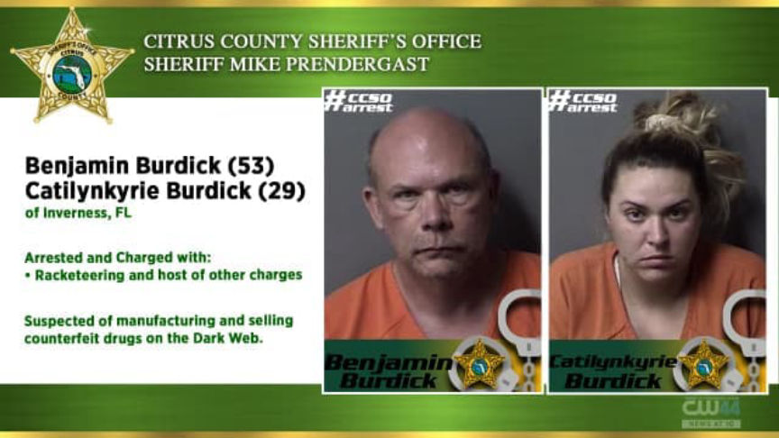
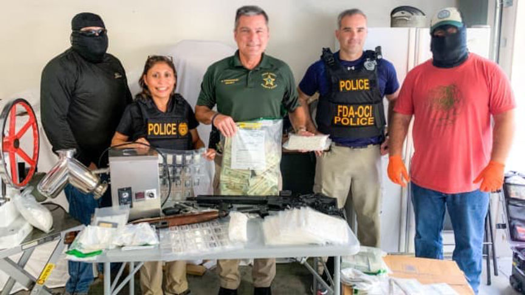
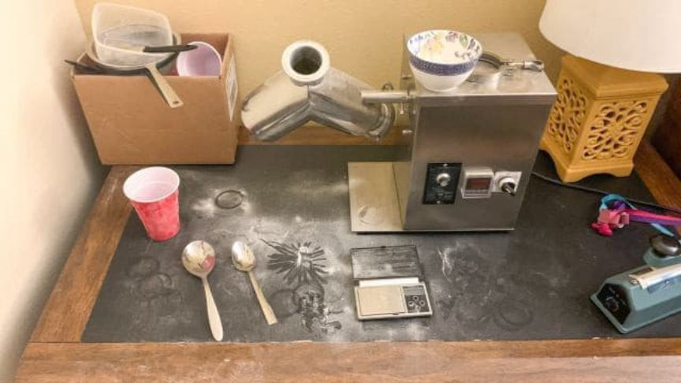
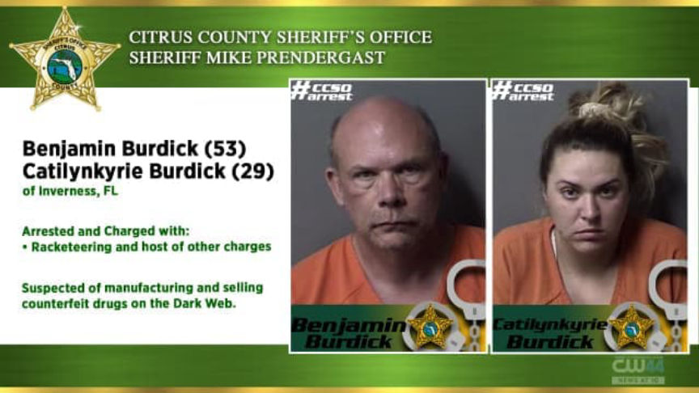

Counterfeit Xanax Vendor Rangoon Sentenced to Prison
~3 min read | Published on 2021-08-25, tagged Darkweb-Vendor, Sentenced using 629 words.
A Florida man is set to spend the next 36 months in prison for manufacturing and distributing counterfeit Xanax pills through the darkweb.
Benjamin Burdick, 55, of Inverness, Florida, was imprisoned for distributing hundreds of thousands of counterfeit Xanax pills through the darkweb. Court documents revealed that Burdick had used a vendor account on Empire and Dark Market under the username “Rangoon”. Burdick distributed at least 249,700 counterfeit Xanax pills through the now-defunct markets from April 2019 through October 2020.

An investigation conducted by the FBI Washington Field Office’s Hi-Tech Opioid Task Force resulted in Burdick’s arrest. The investigation included undercover purchases from “Rangoon” and surveillance that led to Burdick’s identification.
Undercover Purchases on Empire Market
Investigators made several undercover purchases from “Rangoon” on Empire Market between June 2019 and May 2020. Investigators ordered and received hundreds of counterfeit Xanax pills from “Rangoon”. The drug packages arrived in USPS Priority Mail Express envelopes. The packages bore return addresses registered to fake identities. Tests carried out on the pills received by the investigators revealed the pills were made up of substances such as flualprazolam, etizolam, adinazolam, and microcrystalline cellulose.

Burdick’s Identification
Investigators learned that one of the return addresses used by “Rangoon” had been receiving packages from a microcrystalline cellulose seller. USPS records later revealed that a package sent from the seller to the address had been delivered to a post office and was awaiting collection. Surveillance set up at the post office showed that Burdick went to the post office on July 17, 2020, and collected the package.
Investigators later set up surveillance at Burdick’s residence and installed a GPS tracker on his vehicle. On August 10, 2020, the GPS tracker showed that Burdick drove to a post office in Tampa. He dropped off 56 drug packages. The investigators seized one of the packages addressed to a Virginia resident.

Investigators questioned the recipient of the package on August 14, 2020. The recipient allowed investigators to open the package and they reportedly found 11 Xanax pills that later tested positive for flualprazolam and microcrystalline cellulose. The recipient admitted that he had purchased the pills from “Rangoon” on Empire market.
Undercover Purchase on Dark Market
An undercover agent ordered 50 Xanax pills from “Rangoon” on Dark Market on August 26, 2020. The agent received the drug package on September 1, 2020. The packaged contained 53 pills that tested positive for flualprazolam.
USPS records revealed that the package had been shipped on August 26, 2020, from a post office in Inverness. A review of the surveillance footage from Burdick’s residence showed that Burdick placed a box full of USPS Priority Mail envelopes in the back seat of his vehicle on the afternoon of August 26, and drove off. A review of the GPS tracker installed on Burdick’s vehicle revealed that Burdick drove to the post office in Inverness.
Further surveillance showed that Burdick continued to make trips to and from post offices to either drop off or collect packages.
The investigators executed a search warrant at Burdick’s residence on October 14, 2020. The search resulted in the seizure of a pill press machine, a powder blending machine, bags of microcrystalline cellulose, more than 16,000 pills as well as shipping and packaging material. The investigators also seized close to $150,000 in cash, several firearms, and counterfeit driver’s licenses that bore Burdick’s photos.

Burdick was arrested alongside 30-year-old Catilynkyrie Burdick at the end of the search. Burdick was sentenced to three years in prison on August 24, 2021.
[Note: It seems as if it has been a while since we have seen a case where a customer allows LEO to open their package as described above. -DNL]
Benjamin Burdick, 55, of Inverness, Florida, was imprisoned for distributing hundreds of thousands of counterfeit Xanax pills through the darkweb. Court documents revealed that Burdick had used a vendor account on Empire and Dark Market under the username “Rangoon”. Burdick distributed at least 249,700 counterfeit Xanax pills through the now-defunct markets from April 2019 through October 2020.
Benjamin Burdick in his booking photo
An investigation conducted by the FBI Washington Field Office’s Hi-Tech Opioid Task Force resulted in Burdick’s arrest. The investigation included undercover purchases from “Rangoon” and surveillance that led to Burdick’s identification.
Undercover Purchases on Empire Market
Investigators made several undercover purchases from “Rangoon” on Empire Market between June 2019 and May 2020. Investigators ordered and received hundreds of counterfeit Xanax pills from “Rangoon”. The drug packages arrived in USPS Priority Mail Express envelopes. The packages bore return addresses registered to fake identities. Tests carried out on the pills received by the investigators revealed the pills were made up of substances such as flualprazolam, etizolam, adinazolam, and microcrystalline cellulose.

LE posing with their prizes.
Burdick’s Identification
Investigators learned that one of the return addresses used by “Rangoon” had been receiving packages from a microcrystalline cellulose seller. USPS records later revealed that a package sent from the seller to the address had been delivered to a post office and was awaiting collection. Surveillance set up at the post office showed that Burdick went to the post office on July 17, 2020, and collected the package.
Investigators later set up surveillance at Burdick’s residence and installed a GPS tracker on his vehicle. On August 10, 2020, the GPS tracker showed that Burdick drove to a post office in Tampa. He dropped off 56 drug packages. The investigators seized one of the packages addressed to a Virginia resident.

The announcement released by local law enforcement after this vendor's arrest.
Investigators questioned the recipient of the package on August 14, 2020. The recipient allowed investigators to open the package and they reportedly found 11 Xanax pills that later tested positive for flualprazolam and microcrystalline cellulose. The recipient admitted that he had purchased the pills from “Rangoon” on Empire market.
Undercover Purchase on Dark Market
An undercover agent ordered 50 Xanax pills from “Rangoon” on Dark Market on August 26, 2020. The agent received the drug package on September 1, 2020. The packaged contained 53 pills that tested positive for flualprazolam.
USPS records revealed that the package had been shipped on August 26, 2020, from a post office in Inverness. A review of the surveillance footage from Burdick’s residence showed that Burdick placed a box full of USPS Priority Mail envelopes in the back seat of his vehicle on the afternoon of August 26, and drove off. A review of the GPS tracker installed on Burdick’s vehicle revealed that Burdick drove to the post office in Inverness.
Further surveillance showed that Burdick continued to make trips to and from post offices to either drop off or collect packages.
The investigators executed a search warrant at Burdick’s residence on October 14, 2020. The search resulted in the seizure of a pill press machine, a powder blending machine, bags of microcrystalline cellulose, more than 16,000 pills as well as shipping and packaging material. The investigators also seized close to $150,000 in cash, several firearms, and counterfeit driver’s licenses that bore Burdick’s photos.

The announcement released by local law enforcement after this vendor's arrest.
Burdick was arrested alongside 30-year-old Catilynkyrie Burdick at the end of the search. Burdick was sentenced to three years in prison on August 24, 2021.
[Note: It seems as if it has been a while since we have seen a case where a customer allows LEO to open their package as described above. -DNL]